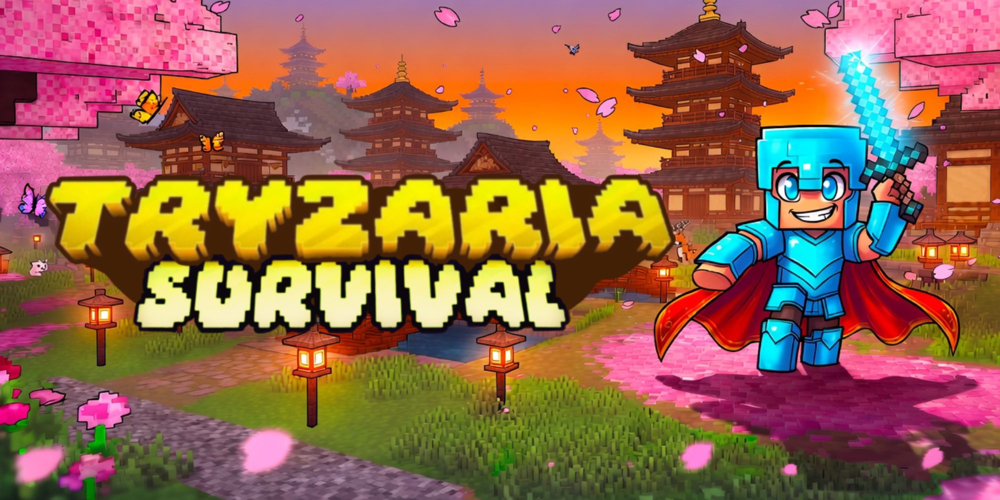

⚔️
Boss custom
Des affrontements scénarisés, des mécaniques uniques et du loot rare à la clé.
Boss custom, mondes sur-mesure et caisses à ouvrir. Tryzaria, c'est la survie 2.0 — pensée pour ceux qui veulent plus que du vanilla.

Un serveur survie 2.0, Java & Cracked, en 1.21.4+. Des boss faits main, des mondes entièrement custom, une économie, des grades et des caisses. Tout le détail est dans le Wiki.
Des affrontements scénarisés, des mécaniques uniques et du loot rare à la clé.
Overworld, Nether, End retravaillés + un monde Arène dédié aux boss.
Ouvre des caisses et tente ta chance : cosmétiques, kits et items rares.
Démarrage, boss, mondes, caisses, toolsmith, votes et règles — tout est expliqué.
Grades, packs et clés, livrés automatiquement en jeu. Soutiens le serveur sans commission.
Suis Tryzaria sur Instagram, YouTube et TikTok pour les nouveautés et les events.
Annonces, events, entraide et vocaux — tout se passe sur le Discord.